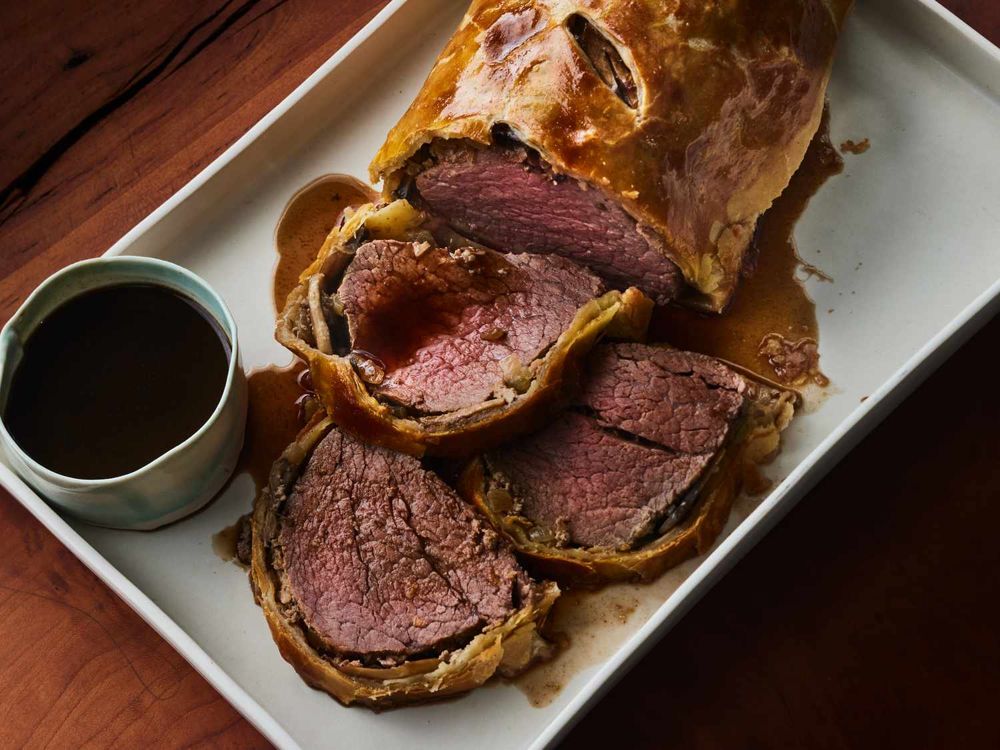

Beef Wellington

Ingredients:
- 1 (2 pound) beef tenderloin
- 1 pinch Ground black pepper
- 1 sheet Pepperidge Farm® Puff Pastry
- 1 egg
- 1 tablespoon water| 1 tablespoon butter
- 1 medium onion,finely chopped | 2 cups mushrooms,finely chopped
Directions
- Step 1Place the beef in a lightly greased roasting pan. Season with the black pepper, if desired. Roast at 425 degrees F for 30 minutes or until a meat thermometer reads 130 degrees F. Cover the pan and refrigerate for 1 hour.
- Step 2Thaw the pastry sheet at room temperature for 40 minutes or until it's easy to handle. Heat the oven to 425 degrees F. Stir the egg and water in a small bowl with a fork.
- Step 3Heat the butter in a 10-inch skillet over medium-high heat. Add the mushrooms and onion and cook until the vegetables are tender and all the liquid is evaporated, stirring often.
- Step 4Unfold the pastry sheet on a lightly floured surface. Roll the pastry sheet into a rectangle 4 inches longer and 6 inches wider than the beef. Brush the pastry sheet with the egg mixture. Spoon the mushroom mixture onto the pastry sheet to within 1-inch of the edges. Place the beef in the center of the mushroom mixture. Starting at the long sides, fold the pastry over the beef. Place seam-side down on a baking sheet. Tuck the ends under to seal. Brush the pastry with the egg mixture.
- Step 5Bake for 25 minutes or until the pastry is golden and a meat thermometer reads 140 degrees F. Slice and serve warm.